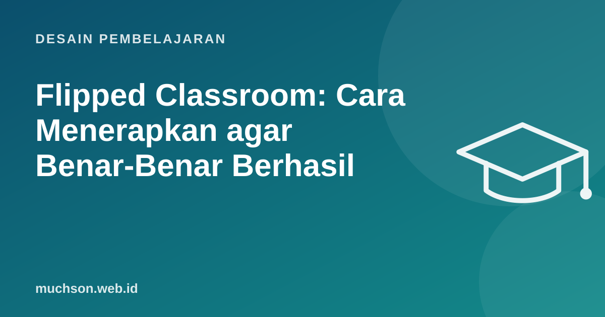

Beranda › Artikel › Desain Pembelajaran
Desain PembelajaranFlipped Classroom: Cara Menerapkan agar Benar-Benar Berhasil
Dalam kelas tradisional, penjelasan terjadi di kelas dan latihan di rumah, padahal saat latihanlah peserta paling butuh bantuan. Flipped classroom membalik urutannya: penjelasan dipelajari sebelum kelas, dan waktu bersama dipakai untuk latihan, diskusi, dan memecahkan masalah.

Apa yang dibalik
Apakah berhasil?
Meta-analisis Strelan, Osborn, dan Palmer (2020) terhadap 198 studi dengan lebih dari 33 ribu siswa menemukan flipped classroom rata-rata memberi efek positif terhadap prestasi dibanding kelas tradisional, di berbagai disiplin dan jenjang. Efeknya lebih besar ketika waktu di kelas benar-benar diisi pembelajaran aktif dan ada kuis untuk memastikan persiapan. Ini sejalan dengan meta-analisis Freeman dkk. (2014) bahwa di kelas sains dan teknik, mahasiswa di kelas ceramah sekitar 1,5 kali lebih mungkin gagal dibanding kelas dengan pembelajaran aktif.
Contoh satu pertemuan: SQL JOIN
| Waktu | Kegiatan |
|---|---|
| H-2 | Video 7 menit tentang INNER dan LEFT JOIN + 4 soal kuis daring. |
| H-1 | Pengajar melihat hasil kuis: 60% salah soal "baris tanpa pasangan". |
| Kelas 0-10 menit | Bahas satu soal yang paling banyak salah, dengan diagram. |
| 10-50 menit | Latihan berpasangan: 6 soal bertingkat di database simulasi toko. |
| 50-75 menit | Tantangan kelompok: jawab 3 pertanyaan "manajer" dari data. |
| 75-90 menit | Tiap kelompok menjelaskan satu query; tiket keluar individu. |
Masalah terbesar: peserta tidak menyiapkan diri
Membuat materi pra-kelas
- Satu konsep per video, dengan tujuan disebut di awal.
- Tunjukkan contoh, bukan hanya teori.
- Sisipkan pertanyaan di tengah video atau tepat setelahnya.
- Tidak perlu produksi mahal: rekaman layar dengan suara jelas sudah cukup.
- Sediakan alternatif teks bagi yang tidak bisa memutar video (kuota, aksesibilitas).
Tanya jawab
Apakah flipped classroom cocok untuk semua topik?
Bagaimana dengan siswa yang tidak punya internet di rumah?
Apakah harus membuat video sendiri?
Sumber dan bacaan lanjut
- Strelan, Osborn, Palmer (2020): The flipped classroom, a meta-analysis, Educational Research Review
- Freeman et al. (2014): Active learning increases student performance in science, engineering, and mathematics, PNAS
- Video pembelajaran yang efektif (artikel terkait)